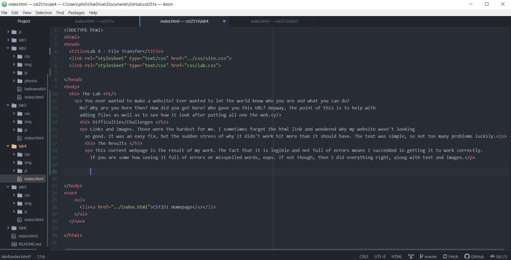

You ever wanted to make a website? Ever wanted to let the world know who you are and what you can do? No? Why are you here then? How did you get here? Who gave you this URL? Anyway, the point of this is to help with adding files as well as to see how it look after putting all one the web.
Links and Images. Those were the hardest for me. I sometimes forgot the html link and wondered why my website wasn't looking so good. It was an easy fix, but the sudden stress of why it didn't work hit more than it should have. The text was simple, so not too many problems luckily.
This current webpage is the result of my work. The fact that it is legible and not full of errors means I succedded in getting it to work correctly. If you are some how seeing it full of errors or misspelled words, oops. If not though, then I did everything right, along with text and images.
